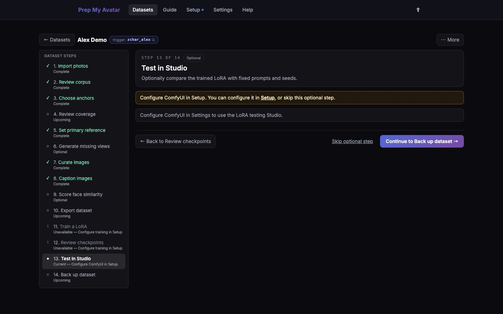

First run · 20 of 21
Step 20: Test in Studio
Studio compares checkpoints and strengths with the same prompts and seeds. This separates the effect of the LoRA from random changes between generated images. This step is optional; if you have no compatible checkpoint or do not use Studio, continue to Step 21.

Before you begin
Studio needs a working ComfyUI setup, compatible base models and nodes, and at least one checkpoint. If Studio cannot run, return to Setup and configure ComfyUI, or skip this optional page and continue to Step 21.
Do this
- Open Test in Studio in the dataset step navigator. Its URL ends in
/studioand it is labelled Optional. - Select the correct model family.
- Choose one or more compatible checkpoints.
- Enter a plain test prompt that includes the Character or Concept trigger word when one is required.
- Keep the suggested strengths and fixed seed for the first comparison.
- Run the test grid.
- Compare identity, prompt obedience, artefacts, and flexibility across rows and strengths.
- Vote or rate the results, then star the best settings.
- Repeat with a different prompt before making a final choice.
- Open any result image you need to keep and select Download image in its preview.
- Return to the dataset step page and select Continue to Back up dataset, or use Skip optional step when Studio is unavailable.
You are finished when
The dataset has starred best settings backed by more than one useful prompt. Record the winning checkpoint filename and strength. Return to Review checkpoints to use Run folder or LoRA folder when you need to locate and copy the checkpoint for another image-generation workflow, then continue to Step 21.